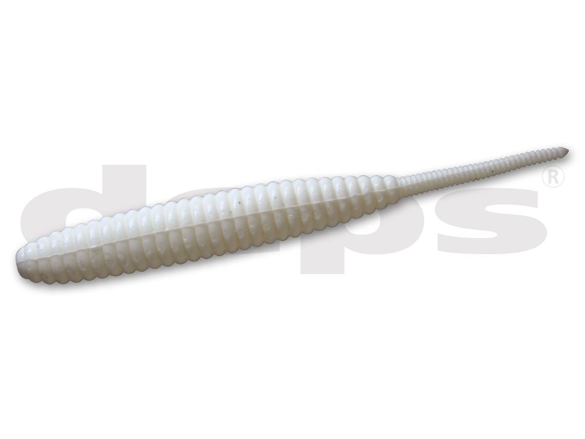
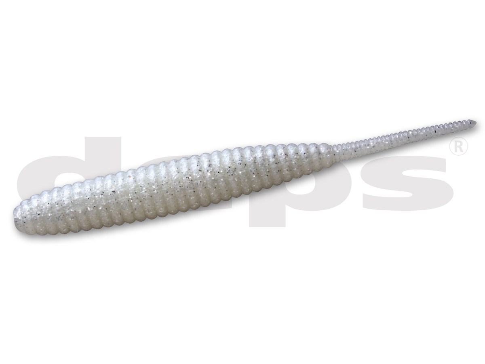
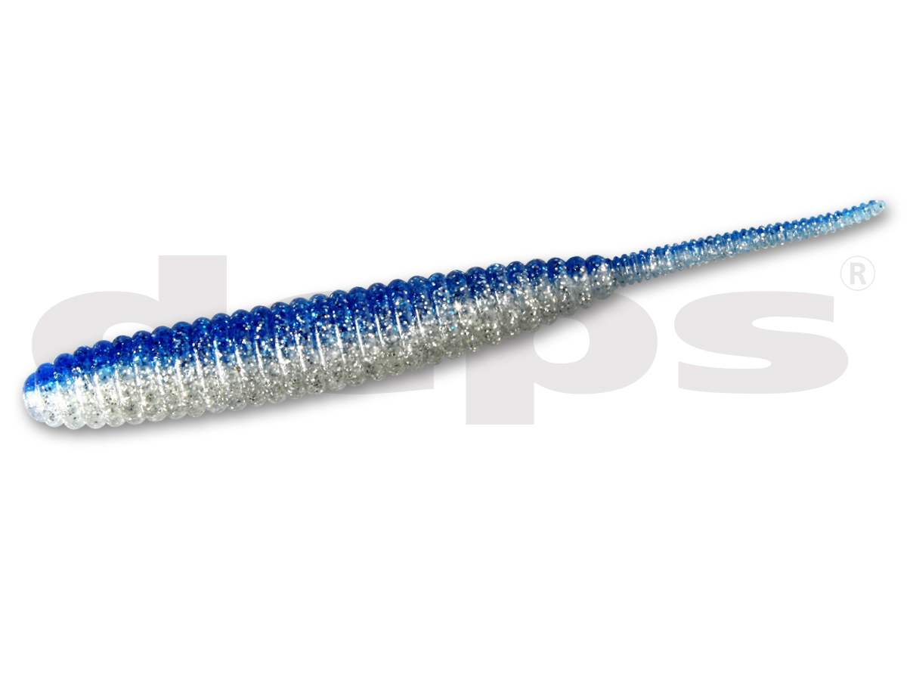
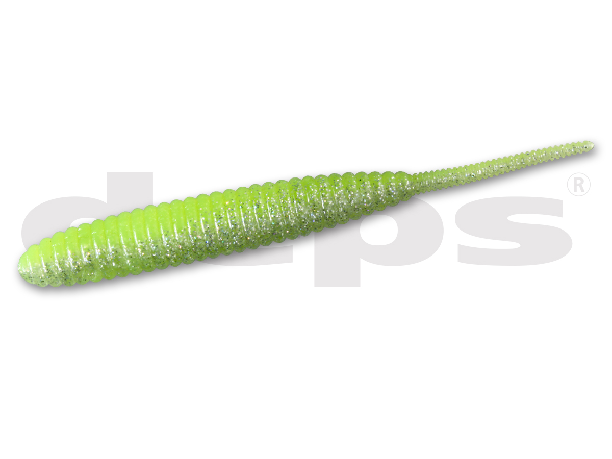

デスアダー
（DEATHADDER）
デスアダーは、デプスのロングセラーワームです。
ピンテールのナチュラルアクションとリブが生む微波動で、2001年の登場からビッグバスを釣り続けてきた名作。実はサーフのヒラメにもよく釣れるワームとして、ソルトのアングラーからも支持されています。3〜8インチまで5サイズがあります。

画像出典:deps公式HP
スペック
- メーカー
- deps（デプス）
- タイプ
- ワーム（ソルト含有量25％）
- サイズ
- 3／4／5／6／8インチ（4・5・6インチはノンソルトもあり）
- 入数
- 3インチ：10本／4・5インチ：8本／6インチ：6本／8インチ：4本
- 推奨オフセットフック
- 3インチ：#2〜#1／4インチ：#1/0〜#1／5インチ：#3/0〜#1/0／6インチ：#5/0〜#3/0／8インチ：#7/0〜#5/0
- ターゲット
- ブラックバス・ヒラメ
- 価格
- 990円（3〜6インチ）／1,100円（8インチ）（税込）
- 発売
- 2001年
▼今すぐチェック

デスアダーの特徴
ピンテールのナチュラルアクションと微波動の、比類なき半生命体
-
ピンテールのナチュラルアクション
細いピンテールが、巻いても落としても自然に揺れる。強すぎない動きで、スレた魚にも見切られにくい。
-
リブが水を受けて微波動
ボディのリブが水を受けて、細かな微波動を出す。ナチュラルな動きの中でも、魚に存在を気づかせる。
-
ソルト25％で沈みやすく飛ばしやすい
ソルト含有量25％の素材で自重があり、ノーシンカーでも遠くまで投げやすく、沈みも安定する。
デスアダーの使い方
バスではノーシンカーでゆっくりフォールさせるのが定番です。
ヒラメ狙いでは、ジグヘッドやテキサスリグで底を取り、底から少し上をゆっくり巻いたりリフト＆フォールさせたりして、ピンテールとリブの微波動で自然に見せましょう。サイズは5〜6インチがサーフでよく使われます。
デスアダーの得意な状況
バスフィッシングのほか、サーフでヒラメを狙う場面でも出番です。
強い波動のシャッドテールとは違うピンテールのナチュラルアクションで、スレたヒラメにも釣れるのが強み。シャッドテールに反応しない時の切り札になります。
ワンポイント
サーフでは、シャッドテールで反応がない時に、同じコースをデスアダーでゆっくり通し直すと、波動の強さの違いで食ってくることがあります。巻きスピードはピンテールが自然に揺れるぎりぎりまで落としましょう。
デスアダーのサイズの選び方
| サイズ | 入数／推奨フック | 向いている場面 |
|---|---|---|
| 3インチ | 10本／#2〜#1 | 小さなベイトに合わせたい時。ライトリグに |
| 4インチ | 8本／#1/0〜#1 | バスのノーシンカーの定番サイズ |
| 5インチ | 8本／#3/0〜#1/0 | バス・ヒラメとも使いやすい万能サイズ |
| 6インチ | 6本／#5/0〜#3/0 | サーフのフラットフィッシュに。大きなシルエットで遠くまで投げられる |
| 8インチ | 4本／#7/0〜#5/0 | ビッグバス・大型狙い |
ヒラメ狙いなら5〜6インチから始めるのがおすすめ。4・5・6インチには、塩を入れていないノンソルトもある。
人気カラー
デスアダーの人気カラーを紹介します。

ホワイトソリッド白いシルエット。濁りや朝夕に目立たせたい時に。

パールホワイト/シルバーフレークシルバーフレークの輝き。小魚を食べている時に。

ブルーシルバーイワシなどの青物系ベイトをイメージしたカラー。

チャートレーザーチャートで目立たせたい時に。濁りの強い日に。
画像出典:deps公式HP
▼今すぐチェック
デスアダーに似ているルアー
-
 サリュー
アダスタ
詳細はこちら＞
サリュー
アダスタ
詳細はこちら＞
フラットフィッシュ用のワーム。サーフで食わせたい時に。
-
 ビーチウォーカー ジャンゴ
DUO
詳細はこちら＞
ビーチウォーカー ジャンゴ
DUO
詳細はこちら＞
サーフ用のジグヘッドワーム。遠投して広く探りたい時に。
-
 ダークスリーパー
メガバス
詳細はこちら＞
ダークスリーパー
メガバス
詳細はこちら＞
ボトムをスイミングさせるバス用のワーム。底を引いて食わせたい時に。